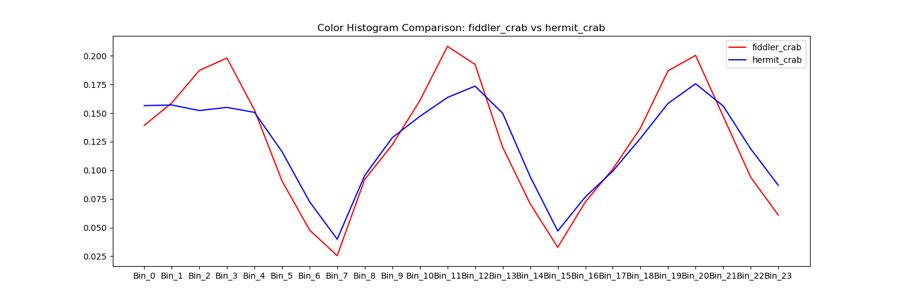
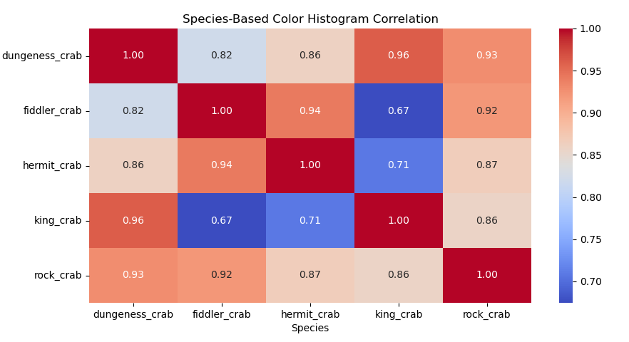

Color-Histograms Analysis Extract the intensity distribution of colors in an image through color
histograms. We compute histograms for the Red, Green, and Blue (RGB) channels.
Species-Based Color Histogram Comparison
Dungeness Crab
Fiddler Crab

Hermit Crab
King Crab
Rock Crab
Color Histogram Heatmap
Color-Histogram Correlation Between Crab Species

Species-Based Color Histogram Correlation
×
×
Dungeness Crab
An oval-shaped carapace that is yellow-brown to purplish. They have four pairs of walking legs and a pair of claws.
Fiddler Crab
Are small, semi-terrestrial crabs are characterized by extreme cheliped asymmetry in males.
Hermit Crab
A soft exoskeleton and a twisted abdomen to fit into snail shells.
King Crab
They range in color from brownish to bluish red and are covered in sharp spines. They have three pairs of walking legs and one pair of claws.
Rock Crab
A wide carapace that is quite smooth to the touch and two large claws of equal size with black tips.